Formulaire - Intégrer en toute simplicité
Même si depuis l'arrivée des logiciels de calcul formel, il est devenu plus facile de rechercher des primitives, il est des circonstances où il reste indispensable de savoir calculer de façon effective la primitive d'une fonction. Notre but est ici de donner un aperçu de quelques techniques élémentaires... Intégration par parties et changement de variables.
Ces deux théorèmes sont les préliminaires indispensables!
- Intégration par parties
Soit 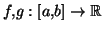 deux fonctions de classe . Alors :
Exemple :![$\displaystyle \int_a^b f'(t)g(t)dt=\big[f(t)g(t)\big]_a^b-\int_a^b f(t)g'(t)dt.$](intsimp1/img3.gif) 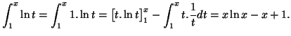De la même façon, on peut déterminer une primitive de 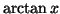 : on obtient 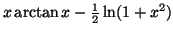.
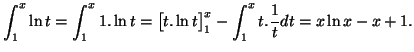De la même façon, on peut déterminer une primitive de 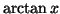 : on obtient 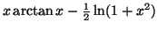. - Changement de variables
Soit $\varphi$ une fonction réelle de classe C1 définie sur un intervalle [a,b]. Soit $f$ une fonction continue sur $\varphi([a,b])$. Alors on a l'égalité :
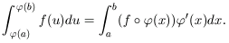
Intégrer une fraction rationnelle
La première chose à faire est de regarder la "tête" de la fraction, pour voir si une astuce du type écrire +1-1 ne simplifierait pas beaucoup l'étude. Sinon, on décompose la fraction rationnelle en éléments simples, puisqu'on sait que toute fraction rationnelle se décompose de manière unique sous la forme :
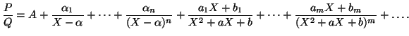
- 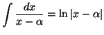.
- 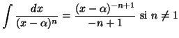.
- Pour calculer
 , on se ramène aux deux classiques qu'on connait :
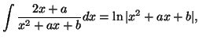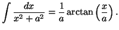On procède comme suit :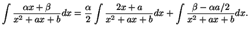Pour la première intégrale, on a directement la bonne forme. Pour la deuxième, il suffit de mettre le dénominateur sous forme canonique.
, on se ramène aux deux classiques qu'on connait :
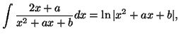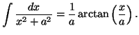On procède comme suit :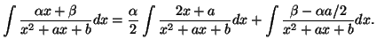Pour la première intégrale, on a directement la bonne forme. Pour la deuxième, il suffit de mettre le dénominateur sous forme canonique. -
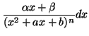 : en procédant comme ci-dessus, on se ramène au calcul de 2 intégrales :
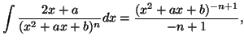et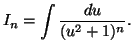En réalisant une intégration par parties par exemple, on peut trouver une formule de récurrence liant les 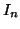 et calculer effectivement leurs valeurs explicites.
Intégrer un polynôme en sinus/cosinus
Le plus facile dans ce cas est de linéariser les produits de sinus/cosinus, et d'intégrer la somme ainsi obtenue
(cf le formulaire de trigonométrie pour étudier les techniques permettant
de linéariser une telle expression).
Intégrer une fraction rationnelle en sinus/cosinus
On doit donc intégrer une fraction rationnelle de la forme
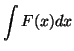, où 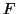 est une fraction rationnelle en et . Le but est de se ramener à une fraction rationnelle simple. On pose
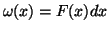, et on essaie un changement de variables donné par la règle de Bioche :
- Si 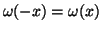, on pose 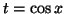.
- Si 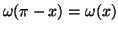, on pose 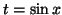.
- Si 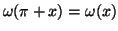, on pose 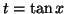.

Intégrer une fraction rationnelle en sinus hyperbolique/cosinus hyperbolique
Le plus simple est bien souvent de poser 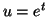, car alors 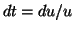, et
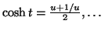. On se ramène donc à une fraction rationnelle.
Intégrales abéliennes
-
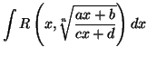, où 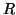 est une fraction rationnelle. On pose
![$ \displaystyle t=\sqrt[n]{\frac{ax+b}{cx+d}}$](intsimp1/img52.gif) .
. -
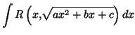 : On va faire disparaître la racine carrée par changement de variables. On met le trinôme du second degré sous forme canonique, et on est ramené à 3 cas :
- 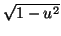 : on pose 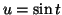.
- 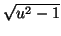 : on pose 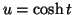.
- 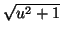 : on pose 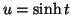.